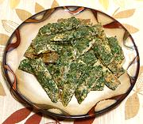

|
Herbal Appetizer OmeletCalifornia | ||||
| Makes: Effort: Sched: DoAhead: |
** min Yes |
This omelet is based on the Acacia Leaf Omelet (Kai Jeaw Cha-om) popular in Thailand and Burma, but made with more easily available herbs. It makes an excellent appetizer served with a simple dip. | |||
|
|
4 1-1/2 1/3 1/2 ------- ar |
lrg oz t T --- |
Eggs Herb (1) Salt Olive Oil ExtV -- Serve with Vinegar Dip (2) |
Prep - (10 min)
|